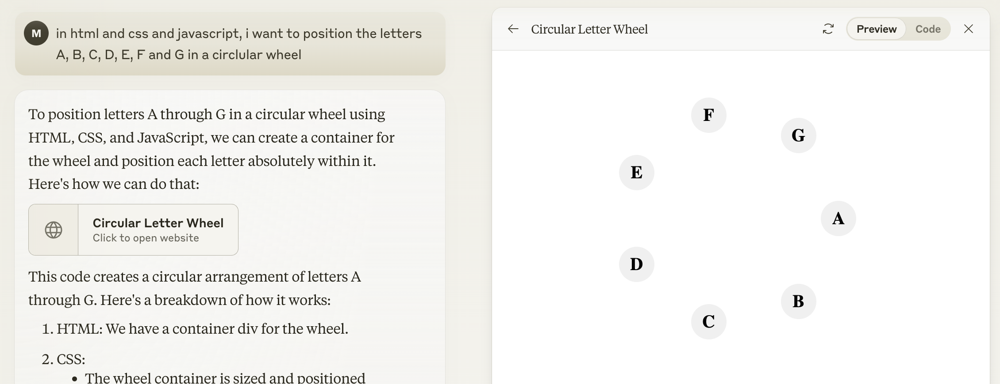
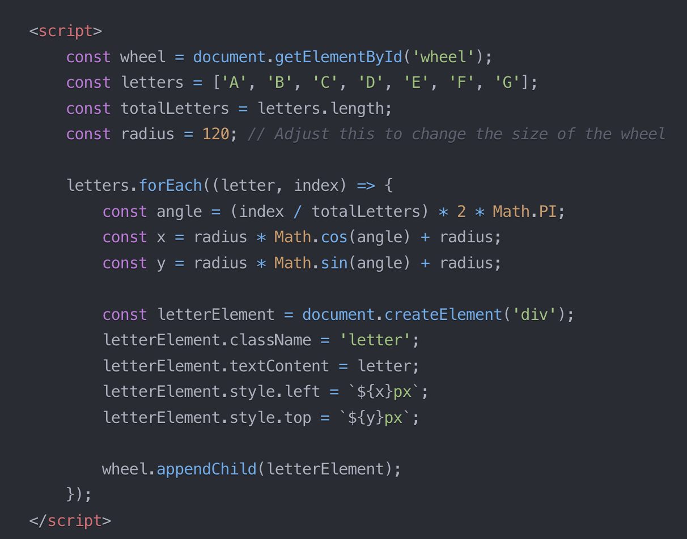
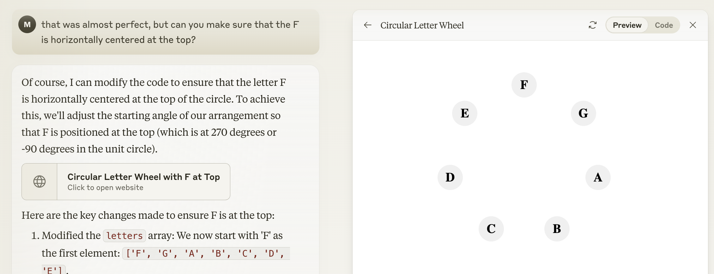

I have 4 (rounded up) beefs with language-y AI bots that have resulted in me sort of avoiding them altogether:
- They have the personality of a middle manager who writes Google Docs all day that nobody wants to read
- They’re reallllly good at guessing but not actually that smart, which leads to very convincing lies (see: the “how many Rs in strawberry?” saga). If I had the inclination to double check all the bot’s work, I would’ve just done it myself
- Absolutely no thank you to the scam that is “prompt engineering”. I’m not wasting 17 demon invocations to convince Chat GPT to do a thing. That’s not the future I was promised.
- (not their fault) I have unresolved trauma about generated code from the Microsoft FrontPage era
Testing the waters
Unrelated to bots, I’ve been recently faffing about on a Swift app, with exactly zero prior knowledge of Swift. I basically have to Google everything (what’s up with the mad ForEach syntax????) to get to a Stack Overflow page that isn’t the one I actually need because search results have gotten sloppy, and it takes a minute. None of the things I’m copy pasting are “hard”; they’re tedious code I can write in other languages but not in this one. And not to be a jerk, but 1-1 code translation isn’t what I want to spend my spare time on.
A friend told me to try Claude.ai, and it worked reasonably well for what I asked of it, which was mostly syntax (how do I add internal padding to a TextField?). I tried it for some harder questions with mixed results: how do I make links inside a WebView not open a native app? was a mess, but why do you think a page of just inputs is really slow gave me the right idea for where to start spelunking.
The problem with trying it on a language I’m not an expert in goes back to Beef #2 above – I can’t spot the very convincing lies as easily, and then I spend extra time trying to figure out if I copied it wrong or the answer is wrong (which is what happened with the WebView question), and it takes longer than if I went the tried-and-true slower Stack Overflow way.
Going for a swim
Here we go, 1700 words in and we’re finally getting to the punchline! Eventually we all become the middle managers we hate, eh? I finally had the opportunity to try Claude on JavaScript, and it went really well. Like, shockingly well.
Context: I was working on this little website and I could absolutely not be bothered to do any polar coordinate math. I thought this would be a perfect opportunity to see if there’s a future in this banana stand.
“In html and css and javascript, i want to position the letters A, B, C, D, E, F and G in a circlular [sic] wheel”

You assume correctly that I did not read any of that explanation because I’m a baddie and reading is for chumps, but looking at it now, it’s spot on for the code it produced. The code, by the way, was good. One container div (blisfully avoided Beef #4, check check), 2 CSS selectors (for the container and inner bubbles), and this bit of completely decent JavaScript.

I could’ve stopped here, but mad with this newly acquired power, and lazy beyond my years, I continued.
“That was almost perfect, but can you make sure that the F is horizontally centered at the top?”

That resulted in the exact code I copy pasted to my website, along with another 1179 word (no joke) essay about the ONE line of code it changed that I left unread.
Towelling off
I know this blog post has the vibe of an excessively proud mother whose dog just did its first poo away from the expensive rug, and tbh it isn’t far from that. The bar was very low. I expected this to be a shit show, and it wasn’t, and I got so excited about this fairly basic task a very large (and probably expensively trained) model completed. I’m not really worried it’s showing signs to replace me, but I am hoping it can help with some of the tedium programming requires.
Can’t wait to return to reality and regret this blog post in 2 months when the rest of the AI bots overthrow the US election and continue teaching the children to put Elmer’s glue on pizza.